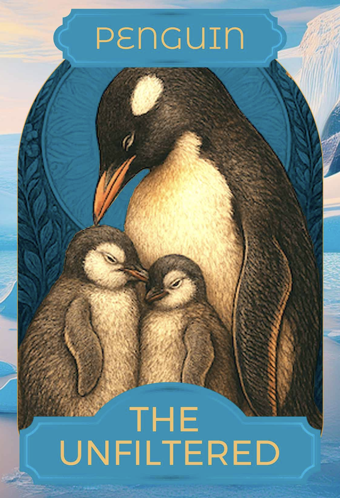

I’ve done the activity, what next?
Individually dive deeper with Feedback Animals.
 Take a moment to reflect on these additional questions to gain deeper insights on different feedback scenarios:
Take a moment to reflect on these additional questions to gain deeper insights on different feedback scenarios:
- What is your default Feedback Animal when you are under pressure? Is it different to your preferred style? Why or why not?
- What situations or scenarios might best suit giving feedback like the owl/lorikeet/meerkat/lioness?
- Are there other Feedback Animal cards that you relate to? Which is your secondary archetype for giving feedback?
- Which feedback animals have you experienced as a receiver? Which have you not experienced?
- Think of feedback you’ve struggled to understand in the past. Which Feedback Animal seems to match how it was delivered?
- If you wanted to invent a new card which fitted you perfectly, what would it be?
 Have a conversation with your coach or mentor, sharing your feedback animals. Ask about theirs.
Have a conversation with your coach or mentor, sharing your feedback animals. Ask about theirs.
Learn more about effective feedback techniques. There are many great resources including; Thanks for the Feedback, Situation, Behaviour & Impact, Building a Healthy Feedback Culture, Crucial Conversations
 Introduce this activity 1:1 with people you routinely give feedback to. Especially valuable where it is a new feedback relationship. A good way to start is to share your preferred ways to give and receive feedback. Include the invitation to receive feedback, especially on areas that you want to grow stronger at. Good feedback isn’t hierarchical, it’s a two-way exchange. Remember to introduce the purpose of the activity; to learn more about each other’s feedback approaches to ensure effective feedback conversations, always delivered with good intentions.
Introduce this activity 1:1 with people you routinely give feedback to. Especially valuable where it is a new feedback relationship. A good way to start is to share your preferred ways to give and receive feedback. Include the invitation to receive feedback, especially on areas that you want to grow stronger at. Good feedback isn’t hierarchical, it’s a two-way exchange. Remember to introduce the purpose of the activity; to learn more about each other’s feedback approaches to ensure effective feedback conversations, always delivered with good intentions.
How can I use this with my team?
The Feedback Animals activity can be a useful tool to kick-off, or reinforce a positive feedback culture in your team. Opportunities where you could use it to start a team conversation include:
- I’m setting up a new team and I want us to get off to a great start, trust each other and thrive.
- New team members have joined my team and we need to do a quick re-set so that no one is left out and there’s good trust and connection.
- My team is drowning; team members are feeling overwhelmed or in tension and it’s affecting how we work.
Activities to try, include:
Introduce the Feedback Animals activity with your team. Great for new teams to help them form, or share the activity as part of a team building workshop.
- Allow 5-10 mins for each team member to individually complete the activity on their laptops. Take individual screenshots to capture the results.
- Take it in turns to share insights, starting with yourself/team leader. Explain when you respond best to receiving feedback.
- Discuss as a group what does this mean for the way we give & receive feedback day to day in our roles?
- Variation on above - include a ‘blank’ card template.
- Is there a different feedback animal that best describes you at work?
- Complete a card template with its name, characteristics, pros & cons?
- Share and explain it to the team.
- Understand the different Feedback Animal archetypes better.
- Assign different Feedback Animal cards to team members (not the ones that are their preferred archetypes)
- Ask them to role play giving & receiving feedback as that archetype. It can be helpful to have a simple feedback scenario prepared for the team eg: Give feedback to a team member on a small training session they ran that had good content, but lacked hands-on practice.
- Discuss: What did you learn? What do you notice?
- Schedule a Feedback Habits team workshop with Unfold Labs
- Incorporate Feedback Animal cards into your existing learning programs eg Leadership, team skills, onboarding.
Uicons by Flaticon
What does feedback sound like from different Feedback Animals?
Scenario: Missed deadline
Context:
Maria is a team member responsible for compiling monthly performance reports. These reports are used in the leadership meeting on the first Monday of every month. Last month, Maria’s report was delayed, which meant the leadership team didn’t have full visibility into team performance. Maria cited that she was waiting on data from another team but didn’t inform anyone of the delay until the day of the meeting.
Your Role:
You are Maria’s team leader. Your goal is to give her feedback that acknowledges her effort and typical reliability, clearly addresses the impact of the missed deadline, and encourages more proactive communication in the future.
| Feedback Animal | What it might sound like | |
|---|---|---|
 |
Owl
The Instructor
|
"Maria, when you realised the other team’s data was going to be delayed, the next step should have been to notify me or the project team immediately. In future, here’s what I’d like you to do: If you’re still waiting on data 48 hours before a deadline, send a quick update to the team with the status and your backup plan. That way we can either help you escalate or adjust expectations proactively. This will help you stay on track and avoid surprises." |
 |
Lorikeet
The Conversationalist
|
"Hey Maria, I wanted to check in about last month’s report. I heard the delay was due to data from another team, but I only found out the day of the meeting. Can you walk me through what happened from your perspective?... after listening... That makes sense. What do you think we could try next time to make sure we’re not caught off guard again?" |
 |
Meerkat
The Harmoniser
|
"Maria, I really appreciate how seriously you take the monthly reports—you’re always thoughtful about getting them right. Last month, I know there were delays outside your control, and I understand that can be frustrating. Just one thing to think about: it’s helpful for us to know earlier if something might be running behind so we can make adjustments. You’re doing great, and I trust you’ll keep improving how you manage those curveballs." |
 |
Lioness
The Challenger
|
"Maria, the missed deadline last month was a problem. You didn’t let us know the report was going to be late, and that put leadership in a position of making decisions without the data. I want you to succeed in this role. I need you to be more proactive about communicating delays—no matter the reason. That kind of heads-up is an expectation for your role. I know you can handle this, but I expect to see it handled differently next time." |
 |
Turtle
The Avoider
|
(Typically avoids giving feedback altogether. Here’s what this might sound like – often to no one or too late.) (Internal monologue weeks later) "Eh, it wasn’t totally her fault. The other team was late. Plus, I don’t want to make it awkward—she already knows it was late. No need to stir things up now." |
 |
Crab
The Sidestepper
|
(Talking to Maria’s boss or a peer instead of Maria) "I didn’t say anything to Maria, but I was frustrated that the report was late again. Maybe you could mention that she needs to flag issues sooner? I think she’d take it better coming from you anyway." |
|  |
Penguin
The Unfiltered
|
"Okay, look, last month’s report? That was a mess! I’m not happy. Your detail on previous reports has been great. I get that you were waiting on data last month, but honestly, that’s not an excuse for not flagging it. We were all blindsided. You need to take more ownership and think ahead, or this is going to keep happening. You’ve been onboarding Steph really well and your suggestion for coffee catch ups is a good one." |